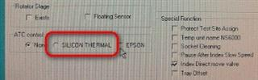
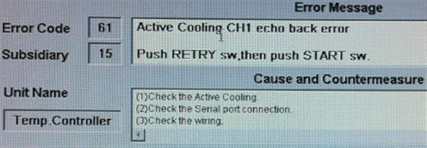
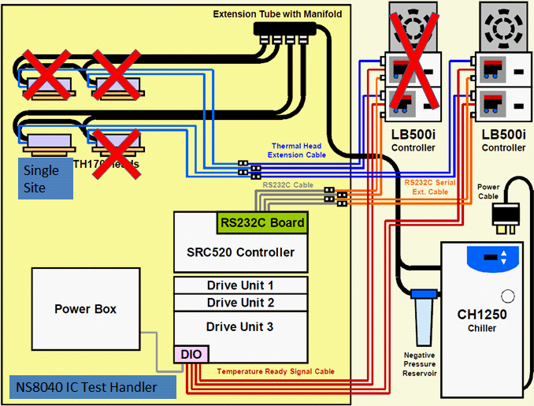

Service History
Subject: NS-8040 ATC upgrade for BCM56840 50x50(single site on arm 2 head 5)
Handler Model: NS-8040 (NS80-40, S/N:181748)
Controller: RC520
Date: 12 Nov 2010
Symptom
UTAC NS80-40 ATC upgrade for BCM56840 50x50(single site on arm 2 head 5)
Action
Carry out hardware installation.
Install chiller, atc controller with PSU, thermal head 5 on index arm 2.
Remove socket heater and shuttle C/K for modification. Thermal head will hit the side of socket heater assembly, shuttle C/K supplied is for wide handler shuttle.
Package came with RS232 Contec board. Iwata san to update ETA of outstanding parts next monday.
15 Nov 2010
Received the contec board today afternoon, we went down to UTAC to install it.
The following were our actions:
1.Checked interface unit was IFUNT200, so set jumper on contec board to J1 and J2 as stated in procedure. SW1 is set at 0. Fix DIO cable into DU2.
2.Fix contec board into top PCI slot. Procedure stated (Don’t use solt 1, bios no need setting), but picture showed top PCI slot used. Pls confirm on this.
3.Fix the thermal controller rs-232 connector into CH1 port of contec board.
4.Power up handler. Installed driver for contec board. OK.
5.Installed HMI v.2.6 and check SILICON THERMAL option in config.exe.
6.Boot into HMI and select active cooling ON, RS-232 temp set ON, temp check for handler start and test start ON, single site.
7.Chiller no DI water so did not ON chiller.
8.ON thermal controller to test but encountered “Active cooling CH2 echo back error”. (Attached picture is showing CH1 because we pulled out rs-232 cable from CH1 port and connected to CH2).
|
 |
 |
Pls advise if there are anything we missed out or done incorrectly.
Also pls confirm on the attached drawing sent by Iwata san.

In the drawing, there are 2x LB500i controller but only use single thermal head.
Remember we received extra 1 set LB500i and cables, Iwata san said they are extra parts.
Pls confirm if we need to install the extra parts according to the attached drawing.
16 Nov 2010
Install the spare LB500i controller and re-soldered the DIO-2 cable.
We did not encountered "Active cooling echo back error". Instead, we have "Active cooling temperature error CH1". Ogata san checked with Suzuki san and he said the HMI software cannot support for this single head testing and need to modify the software.
19 Nov 2010
Found no 24Vdc supply(into DIO-2) after measuring wired P6. Relocate to another 24Vdc point – OK. We shorted the grey and red wires for LB500i head 1 controller and did not encounter anymore “active cooling temperature control error CH1”.
However this is temporary solution. Modified software still required.
Cause
Spare LB500i temperature controller need to be installled and with DIO-2 connection. HMI software need to modify to cater for single head ATC.